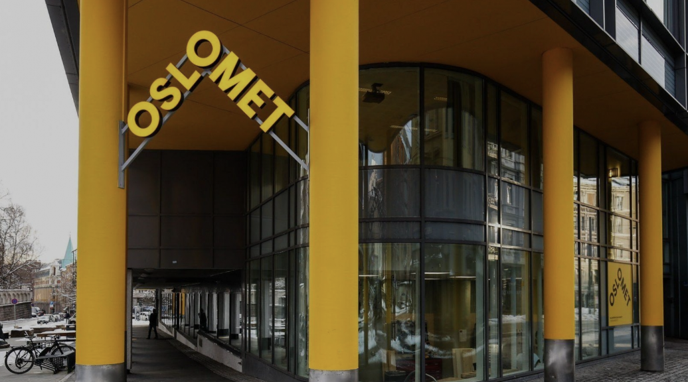

Pilestredet 35 is a vibrant spot at OsloMet, right in the heart of Oslo city center. This modern building houses a variety of study programs and is a place for learning, creativity, and student engagement. Here, you'll find state-of-the-art facilities, lively study areas, and an inclusive atmosphere. We are dedicated to accessibility and sustainability and welcome everyone to become part of our inspiring community. Join us and explore all that OsloMet has to offer!

Accessibility
Discover how OsloMet champions accessibility! Our dedicated page provides a snapshot of our ongoing efforts to ensure our campus and digital presence can be navigated by everyone. Click 'Read more' to learn about our commitment to inclusive design and the measures we've implemented to create an environment that welcomes all.
Delve into 'The Interplay Between Technology and Society' at our university library. Explore how mobile phones transcend being mere technical devices to becoming integral social tools that reflect our values and reshape our daily routines. Engage with discussions on the benefits and challenges of technological integration in our lives, from student discounts to remote learning's impact. Click 'Read more' to uncover insights on how technology is intertwined with academic and social changes, and share your perspective on its role in shaping our community.
Explore the heartbeat of OsloMet – our central campus at Pilestredet 35! Dive into the vibrant map to discover the array of facilities, from the bustling cafeteria to the well-stocked library. Each spot on the map tells a story of innovation, learning, and community. Click 'Read more' to navigate the spaces that make our university a dynamic place to study, meet, and grow.